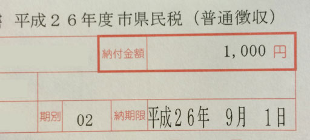

会社の売上はほとんど事務所の維持費や事務バイトの給料などに消えてしまうため、代表である私の給料は月額 85,000円しか出ていません。年収にするとだいたい100万円です。東京には住めないので電車で2時間かかる地方の、駅からさらに徒歩1時間のところに暮らしています。するとどうでしょう、住民税は年間7,000円となりました。４期にわけて4,000円・1,000円・1,000円・1,000円と納められるようになっています。スゴイ・慈悲！いっぺんに納めると飢えてしまうこの私には神のように見えます。そして次なる神はあなたです。千円分お恵みいただくたびに一期分納めてきます。

※納期限は2期目のものです
{{end}}